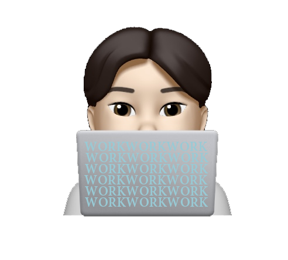

Welcome
반갑습니다!
탄탄한 코드 위에 감각적인 UI를 그려냅니다. 동적 모션을 좋아하고,
컴포넌트 단위의 유지보수에 최적화된 마크업에 관심이 많습니다.
계속 고민하며 더 나은 방향에 대해 사람들과 얘기 나누곤 합니다.
저는 제 일을 좋아합니다. 좋아하니까 즐기게 되고, 더 잘하고 싶어집니다.
목표를 향해 성큼성큼 나아가는 의지, 끊임없이 솟아오르는 영감,
좋아하는 일을 즐기면서 잘하는 것,
제가 꿈꾸는 저의 모습입니다.
Trying my best to be the best
김재홍/Jay Kim
1990년 5월 7일생
호주 멜버른
빅토리아주립대학교
스포츠코칭학과 졸업
Skilled
훈련과정 정보
NCS 스마트 웹&앱 디자인,웹퍼블리셔 UI/UX 콘텐츠제작 수료
*2020.06.17 - 2021.01.06 그린컴퓨터학원 성남분당점- Illustrator,Photoshop,XD - 아이콘 디자인, 사진편집, 베너 디자인 및 홈페이지 디자인
- 디자인 구성요소 설계 - 스토리보드, 사용성 구성요소 설계
- 프로토타입 제작 - 기초데이터 수집 및 스케치, 제작 및 사용성 테스트
- html, css, javascript를 이용한 UI/UX 제작, 구현
-
HTML5
웹 표준을 준수하고 효율적인 코드를 설계합니다.
-
CSS3
Animate와 transform을 활용하여 알맞는
크기에 대응하는 미디어쿼리 사용이 가능합니다 -
JAVASCRIPT
기본적인 기능을 사용 및 직접 구현이 가능하고
javascript에 대한 이해도가 높습니다. -
ADOBE
포토샵,일러스트의 기본적인 기능과
XD의 다양한 기능을 자유자재로 사용합니다.
My Work
Renawal(기여도 100%)
html5
css3
javascript
xd
About
기존 마스터카드의 심플한 디자인을 더욱 고급스러운 느낌을 살려 리뉴얼을 했습니다.
어두운 배경과 심플한 보더를 이용하여 섹션을 나누고 마스터카드 메인 로고의 색상을 사용하여
포인트를 주어 각 컨텐츠에 집중할 수 있도록 디자인했습니다.
Fonts
Noto Sans KR
Prompt
News Cycle
Colors
#212121
#707070
#f79e1b
#eb001b
Renawal(기여도 100%)
html5
css3
javascript
xd
About
BMW MINI Korea에서 John Cooper Works 항목을 리뉴얼 했습니다.
한글 폰트는 최대한 MINI의 느낌처럼 간결하게 타이틀의 영문 폰트는 JCW의
오래된 역사를
표현 할 수 있는 폰트를 사용하였습니다.
작지만 역동적인 JCW의 모습을 마치 한편의 영상광고를 보는듯한 느낌으로 제작하였습니다.
Fonts
Inter
Playfair Display
Anton
Colors
#01010D
#BD0003
#9F9FA2
Responsive
Renawal(기여도 100%)
html5
css3
javascript
xd
About
자연스러움을 추구하는 심플한 디자인의 주얼리 브랜드 PLNT를 리뉴얼 했습니다.
식물의 자연스러움을 표현하기 위해 비대칭 속 정렬된 느낌으로 레이아웃을 배치했습니다.
주얼리 제품을 판매하는 특성상 제품과 컨텐츠에 집중할 수 있도록 제작하였습니다.
Fonts
Krona One
Raleway
Sans-serif
Colors
#00000
#F5F5F5
#f9813a
About
기존 M&M's의 한국과 미국의 홈페이지를 참고하여 M&M's 영문 사이트를 리뉴얼 했습니다.
스크랩북에서 영감을 받아 페이지마다 입체적인 느낌을 표현하였습니다.
또한, 페이지를 구성하는 색상을 보고 해당하는 제품이 떠오르도록
요소들의 색상은
기존 캐릭터들의 색상을
최대한 활용하여,
M&M's의 스크랩북 컨셉으로 제작하였습니다.
Fonts
Oswald
Libre Baskerville
Gloria Hallelujah
Colors
#ffc600
#5b2807
#00000
Contact
24/7 저와 함께 이야기를 나누고 싶을때
- 010 9421 5412
- mikgnoheaj@naver.com
- jhongkim90
좋아하는 일을 위해 정체되어있지 않고
더 발전하기 위해 항상 노력하고자 합니다.
시시각각 급변하는 웹트렌드와 기술을 빠르게 캐치하여 디자인에 반영하고
언제나 배움의 자세를 놓지않고, 꾸준히 발전하여 보탬이 되는 '웹 퍼블리셔'가 되겠습니다.
포트폴리오 사이트에 관심을 가져주시고, 끝까지 읽어주셔서 감사드립니다.